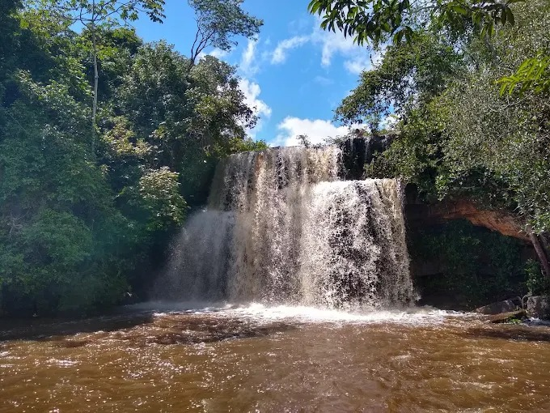

Natureza
Cachoeira do Xixá
A Cachoeira do Xixá é um dos principais atrativos de ecoturismo no Piauí, localizada no povoado que leva o mesmo nome, no município de Batalha, a cerca de 160 km de Teresina. O destino destaca-se por sua beleza natural exuberante e pelo fácil acesso.